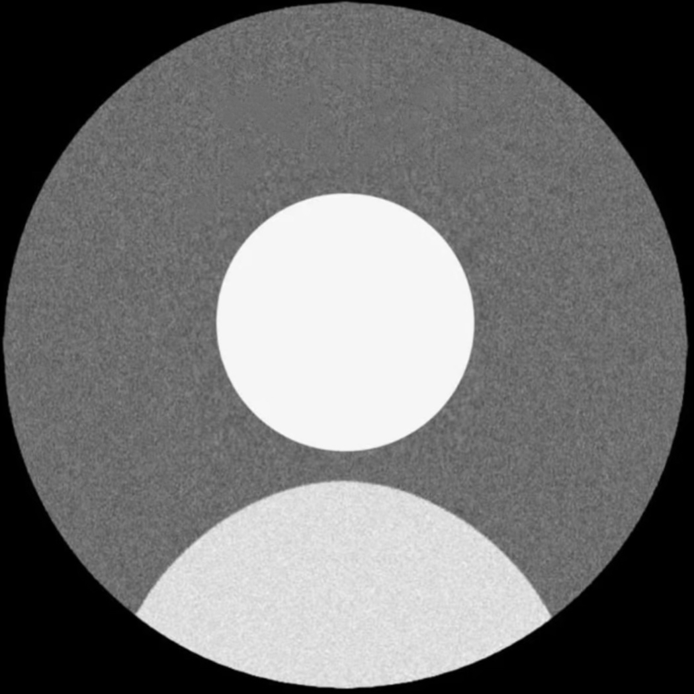
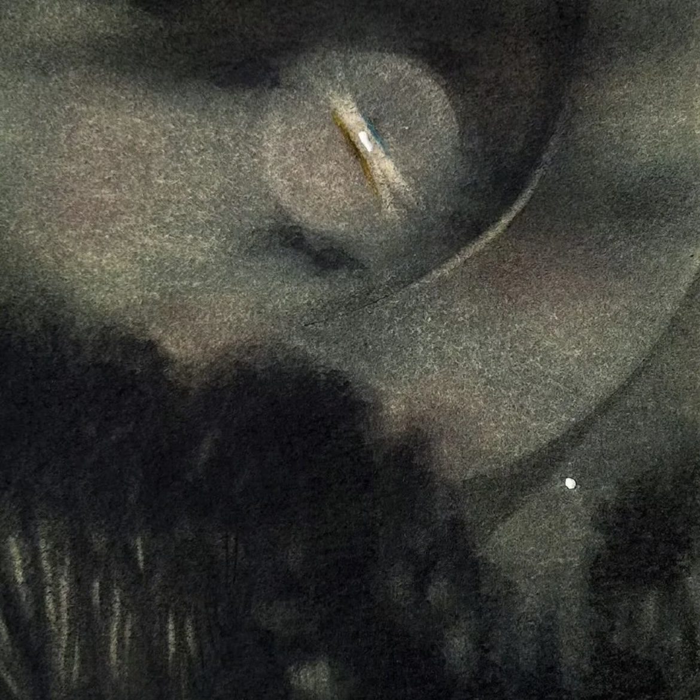
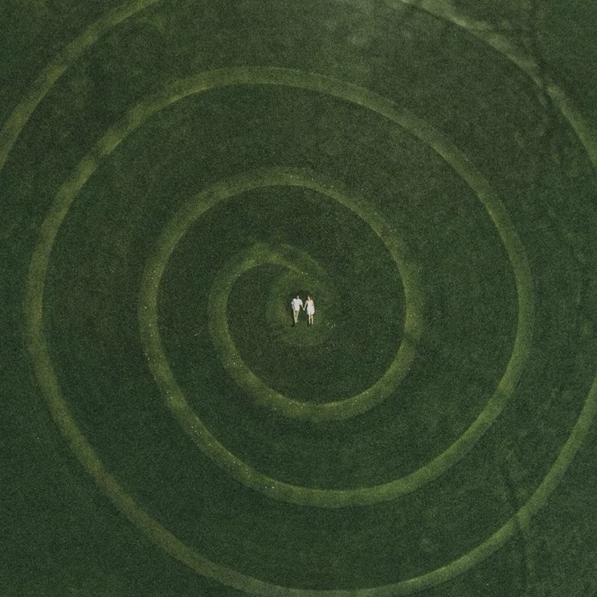
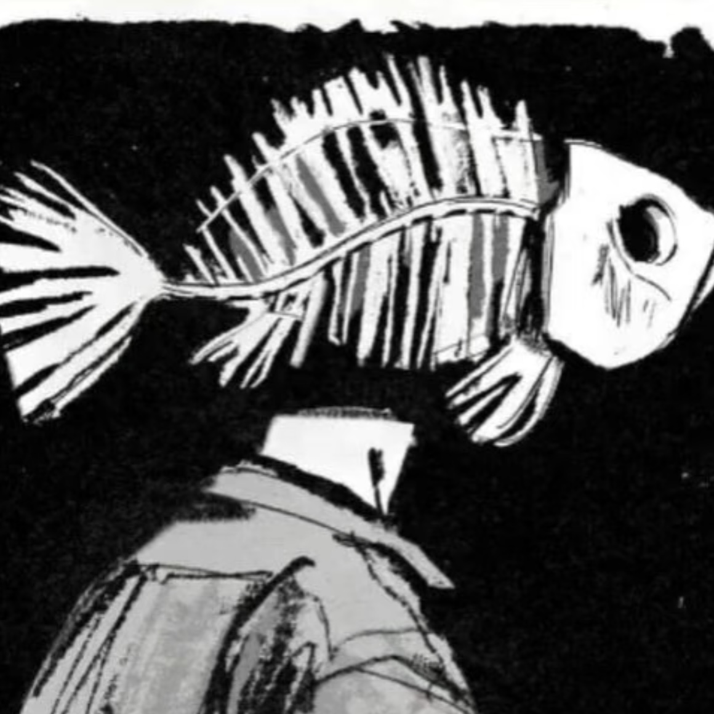

螺旋论坛
用户：小A |
私信
99+
首页
我的关注
我的主页
我的信息
我要发帖！

用户21
这个人很神秘，什么都没有留下……
2030-8-13
加入时间
1
关注
0
粉丝
0
帖子
简介
这个人很神秘，什么都没有留下……
关注的用户

小A
看不惯我，也打不到我:)
关注的版块
代码创世纪
Hello world

心灵绿洲
照见自我与他人的内心世界
情感天地
这里是一个允许你脆弱的地方。失恋的阵痛…无人理解的孤独…你都可以放心地卸下伪装，让情绪安全着陆…

暗物质研究所
用逻辑解剖超自然
未知边界
科学的尽头是未知的起点